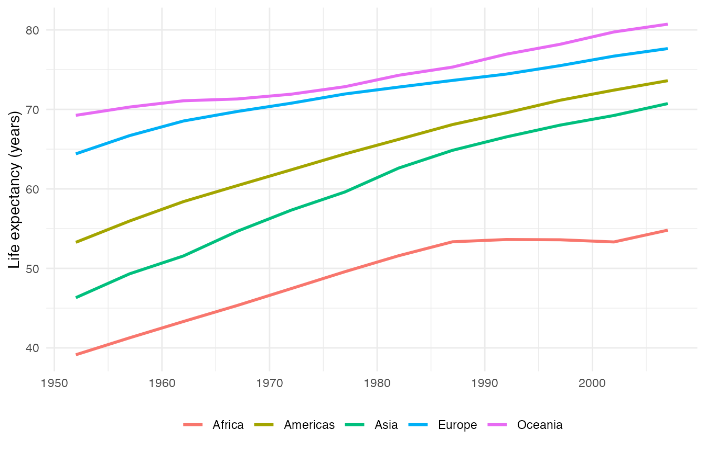
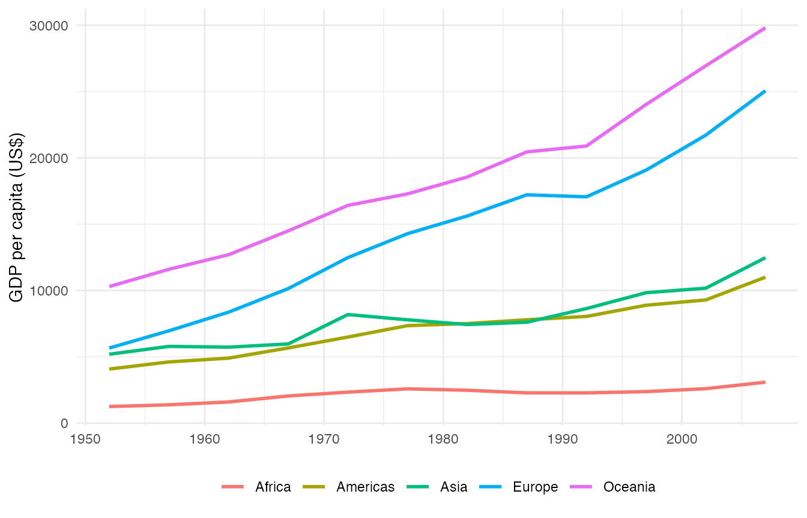
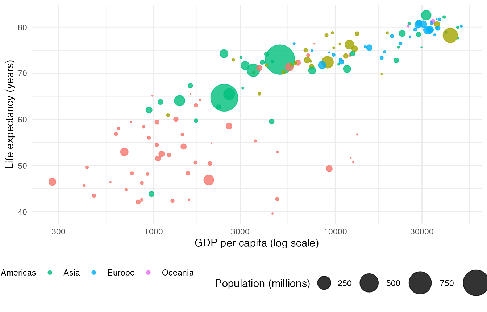

getting-started.Rmdgapxplore is an R package for the unit ETC5523:
Communicating with Data.
It ships a tidy Gapminder panel (gm_panel), continent
aggregates (gm_trends), a latest-year snapshot
(gm_summary), and an interactive Shiny app.
This vignette shows how to:
gm_panel contains one row per
country–year (1952–2007, 5-year steps).
dplyr::glimpse(gm_panel)
#> Rows: 1,704
#> Columns: 6
#> $ country <fct> "Afghanistan", "Afghanistan", "Afghanistan", "Afghanistan", …
#> $ continent <fct> Asia, Asia, Asia, Asia, Asia, Asia, Asia, Asia, Asia, Asia, …
#> $ year <int> 1952, 1957, 1962, 1967, 1972, 1977, 1982, 1987, 1992, 1997, …
#> $ lifeExp <dbl> 28.801, 30.332, 31.997, 34.020, 36.088, 38.438, 39.854, 40.8…
#> $ gdpPercap <dbl> 779.4453, 820.8530, 853.1007, 836.1971, 739.9811, 786.1134, …
#> $ pop <int> 8425333, 9240934, 10267083, 11537966, 13079460, 14880372, 12…Basic checks:
gm_summary keeps one row per country for the most recent
year in the panel (usually 2007).
head(gm_summary)
#> # A tibble: 6 × 6
#> country continent year lifeExp gdpPercap pop_mill
#> <fct> <fct> <int> <dbl> <dbl> <dbl>
#> 1 Afghanistan Asia 2007 43.8 975. 31.9
#> 2 Albania Europe 2007 76.4 5937. 3.6
#> 3 Algeria Africa 2007 72.3 6223. 33.3
#> 4 Angola Africa 2007 42.7 4797. 12.4
#> 5 Argentina Americas 2007 75.3 12779. 40.3
#> 6 Australia Oceania 2007 81.2 34435. 20.4
summary(gm_summary$pop_mill)
#> Min. 1st Qu. Median Mean 3rd Qu. Max.
#> 0.200 4.505 10.515 44.021 31.210 1318.680gm_trends aggregates the panel by continent and
year:
mean_lifeExp — mean life expectancymean_gdpPercap — mean GDP per capitapop_total — total population
dplyr::glimpse(gm_trends)
#> Rows: 60
#> Columns: 5
#> $ continent <fct> Africa, Africa, Africa, Africa, Africa, Africa, Africa,…
#> $ year <int> 1952, 1957, 1962, 1967, 1972, 1977, 1982, 1987, 1992, 1…
#> $ mean_lifeExp <dbl> 39.13550, 41.26635, 43.31944, 45.33454, 47.45094, 49.58…
#> $ mean_gdpPercap <dbl> 1252.572, 1385.236, 1598.079, 2050.364, 2339.616, 2585.…
#> $ pop_total <dbl> 237640501, 264837738, 296516865, 335289489, 379879541, …
ggplot(
gm_trends,
aes(year, mean_lifeExp, colour = continent)
) +
geom_line(linewidth = 1) +
labs(x = NULL, y = "Life expectancy (years)", colour = NULL) +
theme_minimal() +
theme(legend.position = "bottom")
Try GDP per capita:
ggplot(
gm_trends,
aes(year, mean_gdpPercap, colour = continent)
) +
geom_line(linewidth = 1) +
labs(x = NULL, y = "GDP per capita (US$)", colour = NULL) +
theme_minimal() +
theme(legend.position = "bottom")
yr <- max(gm_panel$year)
latest <- dplyr::filter(gm_panel, year == yr)
ggplot(
latest,
aes(gdpPercap, lifeExp, size = pop / 1e6, colour = continent)
) +
geom_point(alpha = 0.8) +
scale_size_area(name = "Population (millions)", max_size = 14) +
scale_x_log10() +
labs(x = "GDP per capita (log scale)", y = "Life expectancy (years)", colour = NULL) +
theme_minimal() +
theme(legend.position = "bottom")
The app is packaged under inst/app. Start it with:
gapxplore::run_app()How to use the app